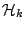

3. Haplotypes histories as
networks of recombinations
Nadia El-Mabrouk, 1 Damian Labuda, 2
Keywords: haplotype, SNP, recombination,
algorithm, network.
Diversity of the human genome, seen across
individuals in populations, is quantal rather than continuous.
Mutations lead to discrete new alleles, whereas recombinations
create discrete haplotypes redistributing these alleles among
homologous segments. Retracing the trajectories of past genetic
events is crucial to understand the structure of the genome, in
individuals and across populations. Diversity of haplotype,
represented as a string of polymorphic sites along DNA sequence,
increases exponentially with the number of sites if recombinations
are taking place. Reconstructing the history of recombinations
compared to that of the polymorphic sites is thus notoriously
difficult. However, because of a relatively simple pattern of
haplotype diversity in the human genome, dominated by a few common
haplotypes, the complexity of the recombinational network can be
reduced making its reconstruction feasible. Common frequent
haplotypes are likely to recombine. We focus thus on the problem of
inferring the recombination pathways starting with common
haplotypes, and leading to rare haplotypes. We describe an
algorithm that generates a set of ``representative'' most
parsimonious sequences of recombinations. We test the algorithm on
haplotypes representing polymorphisms of the 8kb dystrophin gene
segment dys44. This work has been submitted to Genetics
(1).
A haplotype composed of  bi-allelic sites is an ordered binary string of 0's and 1's of size
. A recombination between two
haplotypes
bi-allelic sites is an ordered binary string of 0's and 1's of size
. A recombination between two
haplotypes  and is an
operation of form:
and is an
operation of form:
where ,
 and , as
well as , have the same
length.
and , as
well as , have the same
length.
Let
 be a set of
common haplotypes, and
be a set of
common haplotypes, and  be a rare one. The problem is
to find all minimal sequences of recombinations generating
from a subset of
be a rare one. The problem is
to find all minimal sequences of recombinations generating
from a subset of  .
.
To simplify the subsequent algorithmic
developments, we describe a preprocessing of into a new set of binary strings  . For any haplotype
. For any haplotype  , define
a haplotype
, define
a haplotype  such that for any position
such that for any position
 ,
,
![$H_{k}[pos] = 1$](img17.png) if and only if
if and only if
![$R[pos] = C_{k}[pos]$](img18.png) . Define also the
unitary haplotype
. Define also the
unitary haplotype  such that
such that ![$H[i]=1$](img20.png) for any
for any  .
.
The problem of generating form by recombinations can be
reduced to the problem of generating from
by recombinations.
A canonical sequence of recombinations
generating from is
a sequence of recombinations that does not contain any
recombination on two rare haplotypes.
A greedy recombination is a recombination
that creates a new haplotype with the largest possible prefix of
1s. For example, the following recombination is greedy:
whereas the following recombination is not
greedy:
An example of a canonical sequence of greedy
recombinations is given below. Its associated haplotype set
is
 .
.
Theorem 1 Suppose
there is a sequence of recombinations generating
from the associated haplotype set
. Then there is a canonical
sequence of at most greedy recombinations
generating from an associated haplotype
set being a subset of
.
We developed an algorithm, based on the
construction of an oriented graph, that finds all minimal canonical
sequences of greedy recombinations. An example is given in
Figure 1.
Figure: Pathways obtained by our algorithm (1). Here, haplotypes correspond to
the dystrophin gene segment dys44
(2). Labels of vertices
correspond to polymorphic site numbers. Each pathway (from vertex 0
to vertex 30) represents a set of most parsimonious sequences of
recombinations required to derive the african rare haplotype B047
from the set of common african haplotypes. Except the first edge
(incident to vertex 0), each edge corresponds to one recombination.
Thus, 4 recombinations are required to derive B047. The edge labels
indicate all the common haplotypes that can be considered in a most
parsimonious sequence of recombinations. For example, one solution
corresponding to the pathway
 is to recombine B005 with
B002, then to recombine the resulting haplotype with B012, then the
resulting haplotype with B001, and finally the resulting haplotype
with B005.
is to recombine B005 with
B002, then to recombine the resulting haplotype with B012, then the
resulting haplotype with B001, and finally the resulting haplotype
with B005.
|
|
- 1
- El-Mabrouk, N. and Labuda, D. 2002. Haplotypes histories as
networks of recombinations. Submitted to
Genetics.
- 2
- Labuda, A., Zietkiewicz, E. and Yotova, V. 2000. Archaic
lineages in the history of modern humans. Genetics 156:
799- 808.
Footnotes
- ... El-Mabrouk,1
- Département d'informatique et de recherche
opérationnelle, Université de Montréal, CP
6128 Succursale Centre-ville, Montréal, QC, Canada, H3C 3J7.
E-mail:
mabrouk@iro.umontreal.ca
- ... Labuda,2
- Centre de recherche, Hopital Sainte-Justine, Département
de Pédiatrie, Université de Montréal, 3175
Côte-Sainte-Catherine, Montréal, QC, Canada, H3T 1C5.
E-mail:
damian.labuda@umontreal.ca
2003-04-07